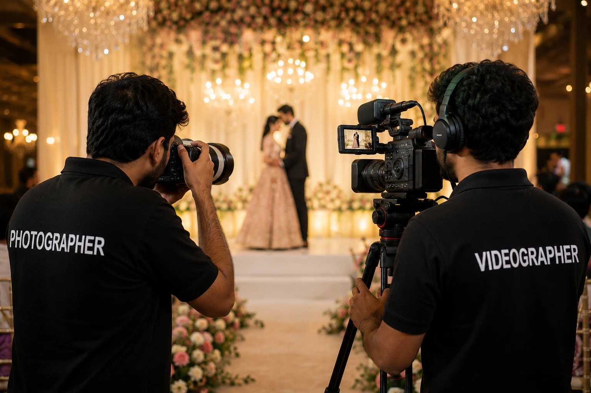
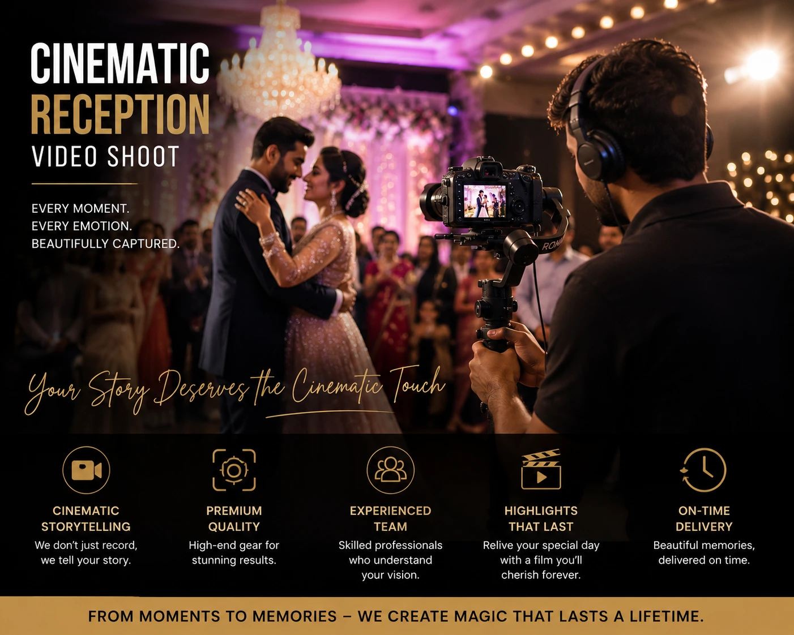

Why You Need a Combined Videographer and Photographer Package for the Best Marriage Photography Experience
Introduction
There is a moment at every wedding that no one plans for — a completely unscripted second where two people look at each other and the entire room disappears. Maybe it happens during the vows. Maybe it is a quiet exchange during a chaotic family portrait session. These are the moments that marriage photography is built to preserve.
But here is the reality most couples only understand after the wedding: photography captures that moment in a single frame. Videography captures everything around it — the breath before, the sound of the crowd, the music, the movement, the emotion that a single image cannot hold. The couple who chooses only one leaves half of their wedding day undocumented in a way they will only fully feel years later. This is exactly why a combined videographer and photographer package has become the gold standard for wedding coverage in India.
The Case for Combined Photography and Videography
Imagine watching your wedding highlight film ten years from now. You hear your own voice — slightly nervous, completely certain — as you exchange your vows. The music builds. You see your partner's face as the doors open. Then the film cuts to the reception: the laughter, the dancing, the toast that made your mother cry. Now imagine you only have photographs. Beautiful, professionally lit photographs. But no sound. No movement. No atmosphere. No voices.
Both are precious. Neither is complete without the other. The couple who commissions both photography and videography from a coordinated team does not just get more content — they get a fuller, richer, more emotionally complete record of the big day wedding that will only grow in value with time.
The coordinated team is key. A photographer and videographer who work together regularly develop a shared visual language — they know not to block each other's angles, when to step back, and where to position for the ceremony's emotional peak. This coordination produces coverage that is seamless rather than competitive, and the result in both the photo gallery and the highlight film is noticeably better.
What a Combined Package Actually Includes
Not all combined packages are created equal. When comparing any videographer and photographer package, look beyond the headline price and confirm exactly what is included across both disciplines.
Photography Must-Haves
- 8–10 hours minimum coverage
- Lead photographer plus associate
- Edited image count and timeline
- Natural colour grading style
- Full personal use rights
Videography Must-Haves
- 5–8 minute cinematic highlight film
- Full-length ceremony edit
- Lapel microphone audio on couple
- Professional colour grading
- Downloadable and streaming delivery
Coordinated Team Advantages
- Shared coverage strategy pre-wedding
- No blocked angles on the day
- Aligned lighting setups for both crafts
- Seamless timeline across disciplines
- Single point of contact for all coverage

The Role of the Engagement Session
Before the wedding day itself, there is one investment that pays disproportionate dividends: the engagement session. Engagement photographers who offer a pre-wedding shoot as part of their package are offering something more valuable than a set of beautiful images — they are offering a rehearsal.
An engagement session is the first time the couple is in front of the camera together with this specific photographer directing them. The couple learns how to move naturally on camera, how to interact without self-consciousness, and what to expect from the photographer's style. The photographer learns the couple's dynamic — who leads, who laughs more easily, who needs a moment to relax before they open up.
By the time the big day wedding arrives, the couple is not strangers to the camera. The stiffness that shows up in so many wedding portraits — the slightly forced smile, the awkward hand placement — is largely absent because the couple has already done this once. For couples evaluating top wedding photographers, an engagement session is one of the clearest signals of how a photographer actually works. The images from an engagement session will tell you more about a photographer's ability to capture genuine emotion than their best twelve wedding shots ever will.
What Separates Top Wedding Photographers from the Rest
The wedding photography industry in India has never been more competitive — or more varied in quality. Here is what actually separates top wedding photographers from the rest:
Technical Mastery in Any Light
A wedding moves from bright outdoor mandaps to dark indoor halls to mixed reception lighting. Top photographers are masters of exposure in every condition — not just ideal light.
The Ability to Disappear
The best photographers are everywhere and invisible. They anticipate the moment, move quietly into position, and capture it without anyone noticing the camera was there.
Post-Production Craft
The editing — colour grading, image selection, retouching — is half the job. A photographer whose gallery matches their portfolio consistently is delivering real quality.
Investment in Your Specific Wedding
The best photographers research the rituals, understand the family, know the venue, and approach your wedding as singular — not as a template with your faces substituted in.
Marriage Video Shoot: What Makes Wedding Videography Extraordinary
A marriage video shoot is not pointing a camera at a ceremony. Extraordinary wedding videography is the result of cinematic thinking applied to a documentary subject — the couple's real day, captured with the visual intentionality of a film production. Here is what separates an extraordinary wedding film from an average one:
- Story structure. A great highlight film has a narrative arc — a beginning that establishes the world of the day, a middle that builds through the ceremony's emotional peak, and an ending that exhales into celebration. This requires editorial judgment that goes beyond competent camera work.
- Sound design. The best wedding films layer audio: natural ceremony sound, vows captured through a dedicated lapel microphone, ambient crowd noise, and a music track selected specifically for the couple's personality. Sound design is what makes a marriage video shoot feel cinematic rather than amateur.
- Colour grading. A skilled colourist creates a consistent visual mood across the entire film — warm and soft for getting-ready moments, dramatic and composed for the ceremony, energetic and saturated for the reception — that reinforces the emotional intention of the edit and matches the tone of the still photography.
- Length and pacing. A highlight film of 5 to 8 minutes is long enough to breathe and short enough to rewatch. It is the professional standard for a reason — it is a piece of cinema, not a documentary. Both have their place, but they serve different purposes and require different production approaches.

How to Evaluate a Combined Package: The Five-Point Checklist
Before committing to any videographer and photographer package, run through this checklist:
- Watch a full wedding film, not just a teaser clip. A 90-second social media clip tells you almost nothing about a videographer's craft. Watch a complete highlight film — 5 to 8 minutes — and evaluate story structure, audio quality, colour grading, and pacing from beginning to end.
- See a full photo gallery from a real wedding. The full gallery reveals consistency across the entire day — getting-ready moments, ceremony, outdoor portraits, reception — across varying lighting conditions. This is far more revealing than any curated portfolio of highlights.
- Confirm who specifically will be on your day. Studios frequently use associate photographers and videographers. Confirm whether the person whose work you are evaluating will personally be present, and if not, ask to see the specific associate's work before agreeing.
- Understand the delivery timeline. A professional photography studio delivers a full edited gallery within 6 to 8 weeks. A professional video team delivers a highlight film within 8 to 12 weeks. Timelines significantly outside these ranges — either direction — are worth understanding before you sign.
- Get every inclusion in writing. Edited image count, highlight film length, ceremony edit, number of professionals on the day, delivery format, usage rights, and cancellation policy — every detail should be in a written contract, not just a verbal agreement or WhatsApp conversation.
Conclusion
The big day wedding deserves complete coverage — not a choice between the still image and the moving one. A combined videographer and photographer package from a coordinated professional team is the only way to ensure that every dimension of your wedding day is preserved: the perfectly composed still image that freezes a moment, and the sound, movement, and atmosphere that give that moment its full meaning.
The couples who look back at their wedding coverage most gratefully are almost always those who invested in both — who worked with top wedding photographers and skilled videographers who understood each other's craft and collaborated seamlessly on the day. Start with a full film review. See the full gallery. Confirm who will be there. And choose a team whose marriage photography and video work makes you feel something before you have even met them.
At The PhD Ads, we offer coordinated photography and videography packages for weddings across Madurai and Tamil Nadu — engagement photographers, marriage photography specialists, and cinematic marriage video shoot teams, all working together from the first consultation through final delivery.
Key Topics
Ready to Book Complete Wedding Coverage?
At The PhD Ads, we specialise in coordinated wedding photography and videography packages — from engagement sessions to cinematic highlight films — built for couples who want their wedding day fully and beautifully preserved.
Email: team@e2o.in